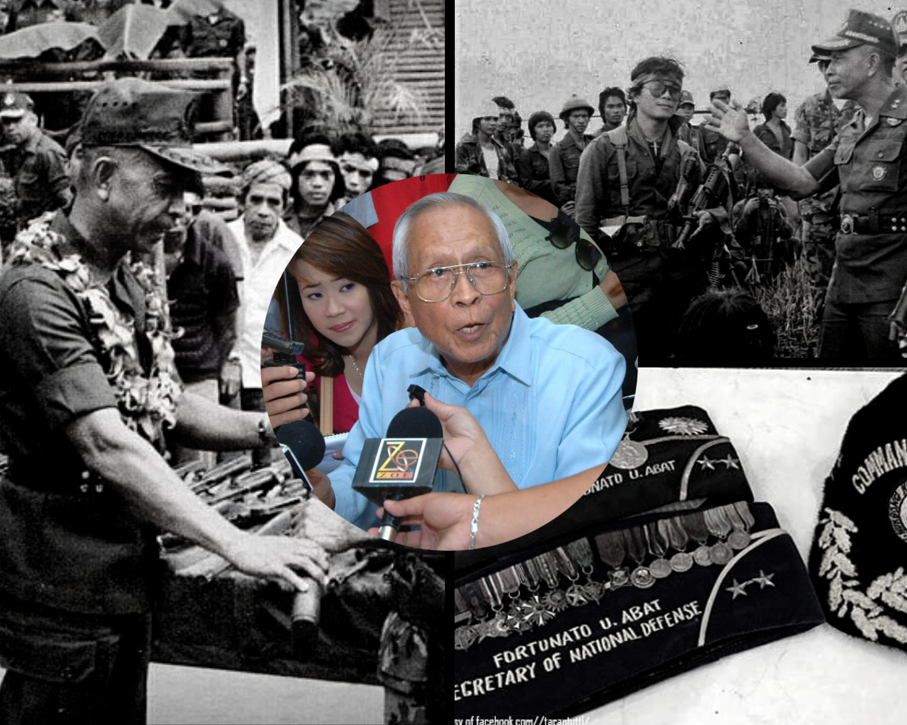
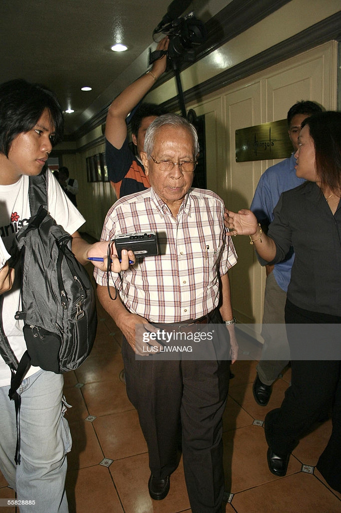
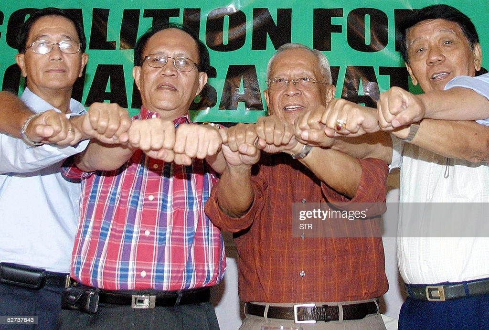
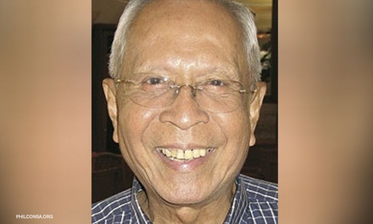
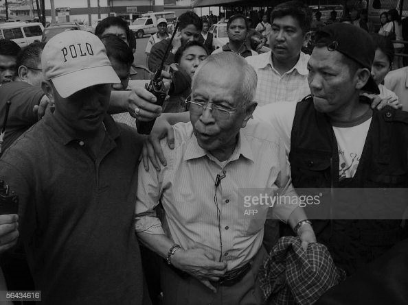
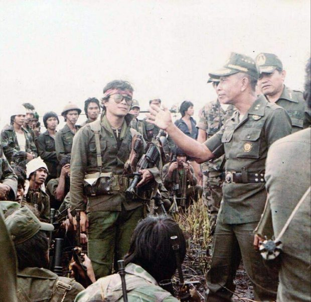
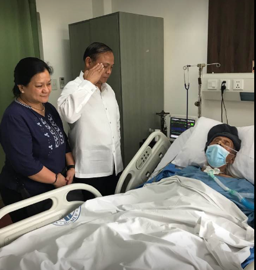
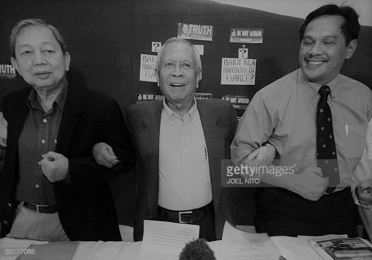
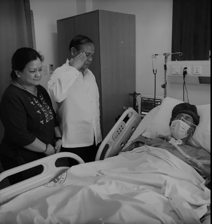

Fortunato Ubongen Abat
The Great Warrior

June 10, 1925 – March 7, 2018
Fortunato U. Abat, a Filipino major general who served as the 20th Secretary of the Department of National Defense (DND), Ambassador to the People's Republic of China, and Commanding General of the Philippine Army.
- June 10, 1925
- Born in San Juan, La Union province. - 1932-1939
-He studied in Singalong Elementary School in the city of Manila. - 1939-1941
-He studied in Araullo High School in Metro Manila. His secondary education was abruptly halted by the Japanese invasion during World War II. - April 15, 1944
-As a young teenager, he entered the Philippine Army which was incorporated into the United States Armed Forces in the Far East (USAFFE) as an enlisted man. - 1947
-He continued his secondary education in La Union High School even after World War II and completed his education. - 1951
-Abat entered the Philippine Military Academy right after finishing his high school diploma and graduated in the Class of '51.
-He was commissioned as 2nd Lieutenant in the Philippine Army. Along with 2nd Lieutenant Fidel V. Ramos, Abat joined the Philippine Expeditionary Forces to Korea (PEFTOK), where he served with distinction under the United Nations flag.
-Abat's colorful military career brought him to become the Assistant Chief of Staff for Operations & Training of the 1st Infantry (Tabak) Division. Later on he became the Senior Armed Forces Attache at the Philippine Embassy in Phnom Penh, Cambodia. He also was sent with the Philippine Delegation to the 1st, 2nd, 3rd, 4th, and 5th Meetings of SEATO Intelligence Assessment Committee in Bangkok, Thailand.
-He also distinguished himself as Commanding Officer of the 3rd Infantry Brigade (Separate), and later on as the Commanding General of the 3rd Infantry Division , and Central Mindanao Command (CEMCOM). - March 28, 1976 to March 28, 1981
-Maj. Gen. Abat finally served as Commanding General of the Philippine Army from March 28, 1976 to March 28, 1981. Tragedy befell the family of Maj. Gen. Abat, when his son, 2Lt. Tito B. Abat, died during an encounter with the New People's Army in Eastern Samar, a year after graduating from the Philippine Military Academy. - May 1981 - April 1986
-Immediately after his retirement from active military service, he joined the Ministry of Human Settlements. A few months later, he was named Ambassador to the People’s Republic of China where he served from May 1981 until after EDSA Revolution on April 1986..
-Upon his return from his Ambassadorship in PROC, Abat was first appointed as the Administrator of the Philippine Veterans Affairs Office (PVAO), a DND agency. Later on, he was named Undersecretary of National Defense (USND) during the term of Defense Secretary Rafael Ileto. He also served as USND during the term of then Defense Secretary Fidel V. Ramos, but he left the Department and was designated Deputy Director General to Secretary Rafael Ileto who later headed the National Security Council (NSC) - 1992
-During the presidency of Fidel Ramos, Abat was the Chairman of the Peace Panel of the Philippine Government during the negotiations with the Moro National Liberation Front (MNLF), which led to signing of a peace treaty on July 18, 1997, ending the three decade old armed hostilities between the Republic of the Philippines and the MILF. He also served as the 20th Secretary of the Department of National Defense from September 16, 1997 to June 30, 1998. - 2001
-During the height of the Impeachment trial of President Joseph Estrada, Abat along with his colleagues in the Association of General and Flag Officers (AGFO) called for the resignation of the President through a Manifesto. Abat finally was appointed as the President & CEO of the John Hay Poro Point Development Corp. by Pres. Gloria Macapagal Arroyo. - 2004
-Despite in retirement, Abat has continued to play a role in Philippine politics , without escaping controversy. Abat, who formed the National Coalition for Solidarity (NCS) and the Movement for National Salvation (MVS) called on for the resignation of President Gloria Macapagal Arroyo. - December 2005
-Abat was arrested after he called on the formation of a revolutionary government, of which he is the new President of the Philippines, and called on the resignation of Pres. Gloria Macapagal Arroyo in view of the latter's allegations of corruption. - August 15, 2006
-Abat called for the abolishment of the Philippine Government and the Philippine Constitution , and the creation of a "Transition Government" of "Discipline and Authoritative Governance" where "All the three (3) branches of government are collectively responsible and accountable to the President that has oversight power over the discharge of their functions and responsibilities. Focus of governance. Governance is focused on the civil service and the military and police service." - May 7, 2018
-Fortunato U. Abat- a Filipino major general who served as the 20th Secretary of the Department of National Defense (DND), Ambassador to the People's Republic of China, and Commanding General of the Philippine Army, dies at 92. His remains were buried at the Fort Bonifacio " Libingan ng mga Bayani " (Cemetery of Heroes).
       
If you're fascinated with the life of this Great Hero, you might want to see this link <More about Fortunato Abat> to know more about Former Major General Abat.
Abat will long be remembered for his bravery in combat in defense of freedom and democracy. It was a display of heroism and sacrifice at the most crucial time the country needed most. May God bless his soul. (PNA).